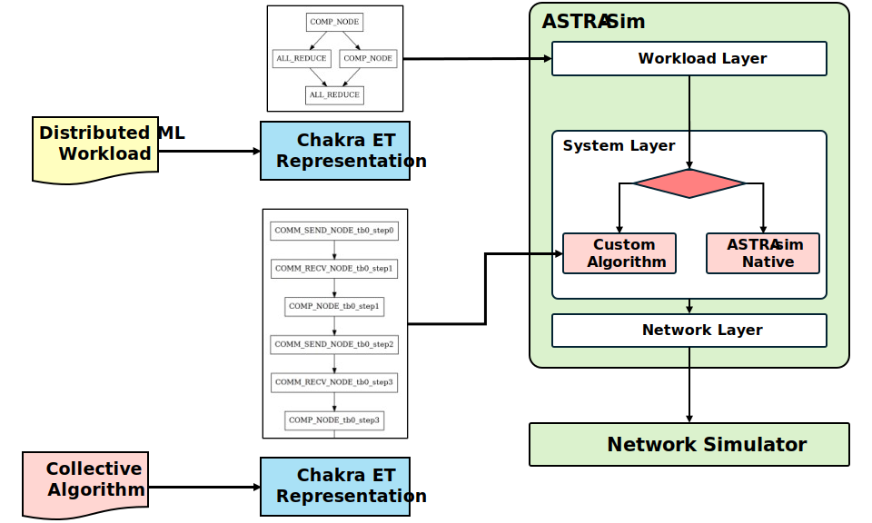

Collective Implementation

As discussed before, the simulator takes in a collective communication (e.g., AllReduce, AllGather, etc.) and breaks it down into send and receive messages. These send and receive messages are simulated by the network backend.
There are two ways the simulator breaks a collective into send and receive messages. The prominent method so far was for the simulator to implement a predefined set of commonly used algorithms (e.g. Ring, DoubleBinary, HalvingDoubling, etc). This ‘Native’ implementation logic resides within the simulator codebase and allows users to quickly explore a predefined set of algorithms.
Since August 2024, ASTRA-sim supports a new way of collective algorithm representation. The system layer exposes a collective API, through which it can receive definitions of arbitrary collective algorithms.
Both methods are implementations of the CollectivePhase::Algorithm object, which is the unit of scheduling in the System layer (refer to the previous scheduling page). Please refer to the code in https://github.com/astra-sim/astra-sim/blob/master/astra-sim/system/CollectivePhase.hh.
ASTRA-Sim Native Implementation
This part is still under construction. For now, please refer to the code in https://github.com/astra-sim/astra-sim/blob/master/astra-sim/system/collective/Ring.cc
Chakra Based Arbitrary Definition Through Collective API
An inherent limitation of the above native method is that to simulate a new collective algorithm, one would have to implement the whole collective in ASTRA_sim native code. With an increasing number of work in non-regular collectives, such as TACOS (topology aware collectives)[1], MSCCLang (expressively written collectives based on DSL)[2], etc., the need to quickly simulate and iterate over a wide variety of arbitrary collective algorithms becomes ever more important.
Therefore, we expose a new collective API to accept the definition of any collective algorithms, not limited to the predefined set (Ring, etc.). For the representation, we use the Chakra ET schema for a separate graph. We represent the collective algorithm as a graph of COMM_SEND, COMM_RECV nodes in the Chakra ET schema. That is, instead of the system layer breaking down collectives into send and receive messages, the system layer simply follows the breakdown already represented in the Chakra graph. Since ASTRA-sim already uses Chakra ET to represent workload, using Chakra ET to additionally define collective algorithms provides an easy and simple way to navigate through the graph.
Refer to the figure on the top of this page. When the Workload layer issues an “AllReduce” collective, instead of running the native implementation logic already in the simulator codebase, the system layer will iterate through the Chakra ET representing the collective algorithm, which has been provided through the collective API. Note how the Chakra graph for the workload and the chakra graph for the collective is decoupled, and provided through different input points. It is the ASTRA-sim simulator that eventually ‘replaces’ the communication nodes with the collective implemenation. This graph substitution is made easy by the workload and communication using the same schema. We anticipate this to open up new avenues such as compute-communication co-optimization.
For a more detailed explanation of the background and motivation, please refer to our paper published in Hot Interconnects (HotI) 2024. (Paper Link)
For a more detailed explanation to generating the inputs to the collective API, please refer to the Collective API Input page.
Reference [1] Won, William, et al. “TACOS: Topology-Aware Collective Algorithm Synthesizer for Distributed Machine Learning.”, In Proceedings of IEEE MICRO 2024 (to appear), https://arxiv.org/abs/2304.05301. [2] Meghan Cowan, et al. “MSCCLang: Microsoft Collective Communication Language.”, In Proceedings of ASPLOS 2023, https://doi.org/10.1145/3575693.3575724